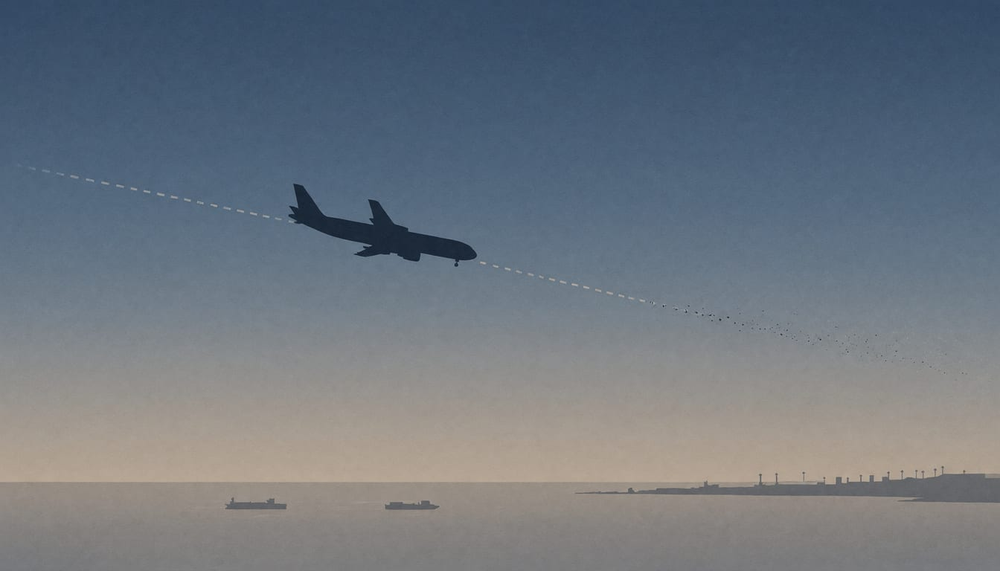

GPS jamming suspected as seven aircraft lose position guidance over Schiphol
The Dutch digital infrastructure inspectorate is investigating, with three sanctioned Russian ships near the suspected source. Eurocontrol issued guidelines in September on the growing problem of satellite navigation interference.

Air traffic control confirmed that Schiphol suffered disruption of the RNP navigation system on 9 November and that seven aircraft were hindered while landing, with jamming plausible as a cause. The aircraft could land safely on instructions from the controller, the service said. Research by the Dutch newspaper NRC, drawing partly on data from the American analyst John Wiseman, indicates the most plausible cause was jamming, possibly from a ship on the North Sea north of Texel.
Kurt Verwilligen, a spokesman for the Belgian air traffic control service Skeyes, said that increasingly aircraft cannot perform RNP approaches. Their navigation systems were disrupted earlier in the route by GPS jamming or spoofing, he said, forcing them to switch to an alternative such as an ILS approach using ground-based navigation signals. Eurocontrol published guidelines on operational response to GNSS degradations. The document, numbered EUROCONTROL-GUID-203, is dated 9 September 2026.
According to Eurocontrol, the guidelines set out a common operational approach covering preparedness, detection, coordination and recovery, with guidance on aeronautical information services, air traffic services procedures and traffic flow measures. It was not the first time in a few months that the Netherlands faced GPS jamming. On 23 July 2026, 58 aircraft in the Netherlands suffered GPS disruptions, NU.nl and RD reported. Aviation safety was not at stake in these cases, the Dutch Ministry of Infrastructure and Water Management said, as the aircraft could use secondary systems to replace the disrupted GPS signal.
In the early evening, a KLM pilot told the Schiphol tower that both GPS systems on his aircraft had failed shortly before landing. Shortly afterwards, pilots of a Lufthansa and an Air France aircraft also reported losing GPS, with the failure message GPS L+R FAIL. The ministry later confirmed that seven aircraft reported disrupted GPS signals to air traffic control during that half hour. According to the ministry, such disruptions happen more often.
At the time of the jamming, six Russian-flagged ships were in the area Wiseman located as the source. Three, the Lady D, the Lady R and the Maia-1, are on the European sanctions list for arms transports between North Korea, Iran and Russia, and, according to shipping news sites, formed a convoy. The Russian navy escorted the three through the North Sea. NATO ships, including a Danish vessel and a French warship, shadowed the convoy, and the Rijksinspectie Digitale Infrastructuur, the Dutch digital infrastructure inspectorate, is investigating.